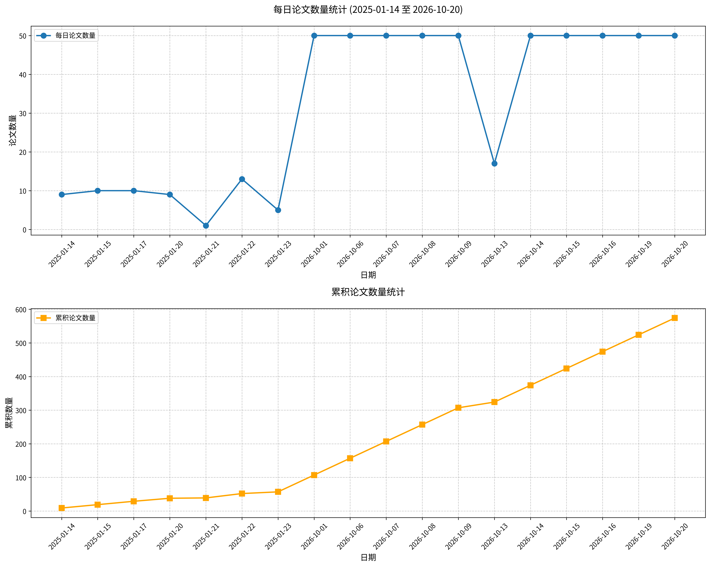

原文标题： Scaling Parameter-Efficient Fine-Tuning for Brain Encoding
摘要： 大脑编码模型旨在预测神经对刺激的响应。最广泛使用的方法是在冻结的预训练骨干网络上拟合读出层。利用神经数据从头训练大型模型，或在任务预训练后对其进行全参数微调，已被证明十分困难，因为神经数据成本高昂且数量有限。我们表明，参数高效微调（PEFT）使我们能够以少量可训练参数，有效地将超大预训练骨干网络适配于大脑编码。为使其在计算上可行，我们利用骨干网络的因果结构，在单次前向中预测多个时间点，而不是使用滑动窗口，从而显著降低特征提取成本。这使得能够高效微调参数量高达 104B 的多模态骨干网络；据我们所知，这是面向大脑编码适配的最大模型。我们的方法使用低秩适配器（LoRA）和轻量级读出层进行训练，在九种不同的多模态骨干网络上持续提升大脑编码性能。在与先前最先进（SoTA）方法相同的 Qwen3-Omni 骨干网络上，我们的方法 BrainLoRA 在 Algonauts 2025 挑战赛上取得了已发表的最佳性能。我们还表明，适配后的多模态骨干网络仍然具有可解释性：模态归因恢复了典型的感觉地形图，而先前工作通常通过构建独立的单模态编码器来获得该地形图；神经适配增加了音频输入的贡献以及骨干网络内部的跨模态混合。为扩展适配模型的数量，我们开发了一种多 LoRA 内核，可加速在共享骨干网络上联合训练多个 LoRA。这使得由 200 多个适配模型组成的集成在撰写本文时在公开的 Algonauts 赛后排行榜上排名第一。总之，我们的结果突显了 PEFT 作为一种高效且强大的大脑编码范式。
论文链接： HuggingFace | arXiv
原文标题： Learning from Fleet Experience: A Collective Learning Paradigm for Robots
摘要： 部署过程中产生的经验为机器人提供了通过学习自身执行过程来提高策略可靠性的机会。然而，通过人工纠正进行学习要求遥操作员监控执行过程，并在策略失败时进行干预；随着机器人集群规模扩大，这一需求难以满足。我们提出集体经验学习（CEL），一种已部署机器人共享执行经验以改进共同策略的学习范式。我们通过失败引导的经验检索微调（FERT）实现CEL：该方法利用机器人执行中的失败情境，从集群共享的成功经验中检索相关轨迹片段，并将其动作作为策略更新的监督信号，而无需收集额外的专家示范或纠正动作。容错异步训练系统（FATS）可在机器人集群发生局部中断时协调经验收集、策略优化和策略分发。在五个真实世界操作任务中，所得策略在未参与训练数据收集的机器人上按每个任务120次试验进行评估，成功率达到93.3%–99.2%。在每个机器人的收集时间保持固定的条件下，更大规模集群可提供更多经验，且FERT在所评估的规模上通常取得更高成功率。在多阶段手机包装任务中，使用96台机器人进行学习将成功率从79.2%提高到98.3%。这些结果支持将集体经验作为可扩展机器人学习的实用基础，并展示了一条在部署期间无需收集额外专家纠正动作即可提高策略可靠性的路径。
论文链接： HuggingFace | arXiv
原文标题： MemT-1.0: Towards Memory-Native Evolution
摘要： 记忆原生演化要求将记忆变为基础模型的一种内在能力，使其能够持续积累和利用信息。为此，我们提出 MemT-1.0，一种新的记忆基础模型架构，将记忆内化为模型计算的一部分。MemT-1.0 基于 Metis，采用 Gated DeltaNet-2，并配备每轮内稳定的 token 级记忆更新机制。我们进一步引入 Mixture-of-Storage 以扩展原生记忆容量。在精心设计的主干准备之后，我们开发了由持续预训练和后训练组成的两阶段训练流程，并由 340 亿 token 的训练数据以及高效的训练与推理基础设施支撑。我们发布了包含 MemT-1.0-Nano 和 MemT-1.0-Flash 的模型系列，并对记忆能力和通用能力进行了全面评估。结果表明，它们平均而言优于参数化记忆基线，并与检索增强方法保持竞争力，同时基本保持通用能力。在 128K token 的历史长度下，MemT-1.0-Nano 相对于完整上下文 KV 缓存实现了约 1.86 倍的端到端推理加速和 66 倍的持久存储降低。通过内化检索到的程序性经验，MemT-1.0 提升了智能体任务的任务成功率，为迈向记忆原生演化提供了切实可行的一步。
论文链接： HuggingFace | arXiv
原文标题： Holi-World: Building Holistic World Intelligence from Human-Ego Experience
摘要： 人类第一人称经验为学习世界如何组织以及如何通过交互发生变化提供了丰富的基础。要大规模实现这一潜力，需要将日益增长的录制数据转化为学习资源，跨越视角和时间连接场景结构、物体语义与交互历史，同时减少对昂贵人工标注的依赖。我们提出HOLI-WORLD，一个连接经验采集、世界表示、自动化数据构建、模型学习和独立评估的综合生态系统。为支持大规模学习，HOLIWORLD-Foundry结合互补的静态与动态感知，自动构建世界记录，将持久场景结构和演化中的物体状态与交互历史及支撑观测相连接。HOLIWORLD-Data将这些来自约100个自采集场景的记录组织为有根据的学习资源，包括约8万个用于训练HOLIWORLD-VL-4B的问答对。对留出录制数据的独立人工标注构成HOLIWORLD-Bench，支持评估标注质量以及学习到的空间和时间理解。在ScanNet、ScanNet++、Aria Digital Twin和HOLIWORLD-Bench上的实验表明，在静态感知和动态跟踪方面具有强劲性能，而在HOLIWORLD-Data上训练显著提升了HOLIWORLD-VL-4B在HOLIWORLD-Bench和EgoDynamic4D上的空间与时间推理能力。HOLIWORLD为从连续的人类经验流中扩展学习资源并推进机器对动态世界的理解提供了实用基础。
论文链接： HuggingFace | arXiv
原文标题： EgoXperience: Learning World-Grounded Egocentric Representations from Human Experience
摘要： 从自我中心视频中重建人类活动不仅需要恢复各个独立的3D组件：观察者的运动、周围几何结构以及手-物体交互必须在一致的世界中相互契合。实现这种一致性既需要联合重建，也需要对齐监督，然而现有方法和数据集对二者的支持均有限。我们提出EgoXperience，一种全栈范式，通过数据采集、自动标注、统一建模和基准测试来满足这些需求。EgoXperience的核心是一个自动标注引擎EgoX-Engine，它将经过几何验证的物体跟踪与基于SLAM的世界对齐相结合，为相机、场景、手和物体生成一致的监督。由此得到EgoX-Data-6M，一个时长50小时的数据集，涵盖室内外环境内及跨环境的任务驱动操作与移动，并带有秒级任务描述。我们仔细从这些活动类别中选取一小时作为EgoX-Bench，用于评估联合重建。为了将这种监督转化为重建，我们引入EgoX，并使用EgoX-Data-6M以及来自其他公共数据集的补充标注进行训练。给定单目自我中心视频和首帧物体掩码，我们的模型通过单次前向传播，在共享世界坐标系中实现相机、场景、手和物体的联合度量重建。大量实验表明，在场景估计和世界空间手-物体姿态恢复方面达到最先进性能。与所评估的最强基线相比，EgoX将相机、手和深度误差分别降低68.9%、65.6%和42.9%，并将物体姿态得分提高28.0%。
论文链接： HuggingFace | arXiv
原文标题： OpenVLHarness: Real World Visual Agentic Tool-Use with Multimodal Memory
摘要： 多模态大语言模型（MLLMs）在视觉推理方面已取得快速进展，但许多任务所需的证据难以仅通过内部推理获得：我们在22个基准上的受控研究表明，单纯增加基础模型的推理预算仅能带来有限提升。此类任务需要借助异构工具获得有依据的感知、外部知识和数值测量，而这些工具的输出必须对模型可解释，并在各推理步骤间得以保留。我们提出 OpenVLHarness，一种围绕能力层与持久多模态记忆组织的多模态推理框架。能力层将任务级工具接口与证据渲染相结合，为异构后端提供一致访问，并将其输出转换为模型可读的观察结果。持久多模态记忆在每次查询全程将相应图像、结构化数据和网页引用保留为可寻址工件。编程接口可在已存储数据上执行生成的程序，从而支持组合多个工具结果的计算。上述机制共同支持获取、检查与组合多模态证据的迭代过程。在22个基准上使用八个开源与专有骨干模型进行评估，OpenVLHarness 相较匹配的无工具基线平均得分提升9.7–12.6分，其中 Qwen3-VL-8B 提升+11.2，Kimi K3 提升+9.7，GPT-6 Astra 提升+9.9。在 GPT-6 Luna 以中等推理强度运行时，OpenVLHarness 相较基础模型、Codex 和 Visual Sketchpad 在最大推理强度下的表现高出7.7–8.5分，同时模型 token 成本至多为其37%。
论文链接： HuggingFace | arXiv
原文标题： ScaleNav: Scalable Internet Video Pretraining for Language-Conditioned Local Navigation
摘要： 我们研究语言条件局部导航，其中机器人必须导航至其初始观测中可见的文本指定目标，并在所描述的位置停止。端到端导航策略需要多样化的训练数据以泛化到不同场景，但真实机器人数据采集成本高昂，而仿真数据存在仿真到现实的差距。互联网第一人称视频为真实世界导航经验提供了一种可扩展的来源。我们的核心见解是从互联网第一人称视频中学习目标导向的视觉动态，并利用这些动态支持机器人动作生成。为此，我们提出ScaleNav，一个具有三阶段训练的统一世界-动作框架。我们首先在这些视频上进行指令条件视频预训练，以学习在多样真实场景中相机接近指令目标时观测如何演变。随后，动作对齐使用带动作标签的仿真数据训练模型预测可执行动作块。联合微调随后针对导航共同优化所有可训练组件。ScaleNav在Short-Horizon OVON的单视图适配版本上达到86.5%的成功率，并在我们的HabitatGS-LN基准上达到94.9%，在两个基准上均优于所评估的基线。我们进一步在真实四足机器人上部署并评估ScaleNav，结果支持该模型泛化到真实世界导航的能力。代码和视频见 https://zju3dv.github.io/ScaleNav/
论文链接： HuggingFace | arXiv
原文标题： SpecMRL: Redesign Matryoshka Representation Learning within Parametric Spectrum
摘要： 套娃表示学习（MRL）通过联合优化嵌套前缀来支持灵活的表示尺寸。尽管该设计有效，但其缺乏显式约束以确保前导部分提供合适的紧凑编码。为此，我们提出SpecMRL，通过重新组织特征空间来实现更有效的前缀读出。具体而言，我们用一个由参数导出并按特征重要性组织的谱基来扩展MRL。除此之外，SpecMRL遵循标准MRL，并在学习到的谱空间中执行前缀读出。在MTEB上的实验表明，SpecMRL在所有评估的降维维度上均优于MRL，且在更激进的压缩条件下增益更大。这些结果表明，学习到的谱基能够更好地优先考虑信息方向，从而实现更有效的表示压缩。值得注意的是，SpecMRL拓展了MRL的性能前沿，仅用一半的嵌入维度便超越了全维MRL。
论文链接： HuggingFace | arXiv
原文标题： OR-License: Evaluating LLM Agents as Real-World Operations Research Practitioners
摘要： 大语言模型（LLM）智能体能否直接从原始客户材料出发提供专家级运筹学（OR）解决方案，而无需事先由专家进行问题重构？现有的运筹学基准测试通常以自包含的描述或预定义的优化任务为起点，未能充分体现将原始商业材料转化为经专业验证的解决方案这一过程。我们提出OR-License，这是一个端到端基准测试，涵盖来自付费运筹学合作项目（总金额达368万美元）的10个工业场景共31个实例。该基准在脱敏处理后保留了原始需求、输入数据、交付格式和信息边界。为研究信息获取过程，我们引入ORSim——一个受控的客户模拟器，它在不提供运筹学专业知识的前提下披露业务事实。隐藏评估检查可行性，并将目标质量与基准构建前客户已接受的原始专家解决方案进行比较。部署调整质量（DAQ）对各实例的专家相对质量取平均，不可行的交付计为零分。在使用编码智能体框架的11个前沿LLM中，若干模型在条件目标质量上超过专家参考，但无一在DAQ上与专家持平；最强的主要Claude Code配置达到88.39%的严格可行性和0.87的DAQ（专家参考值为1）。客户信息获取不仅限于澄清需求，还延伸至解决方案的开发与验证，部分后期阶段显示出更高的已确认问题解决比例。轨迹分析识别出建模与实现方面的失败，而在可评估任务上，任务均衡的研究链完成率在各模型间为24%至45%。这些发现表明，可靠的长时程智能体需要持续解决信息缺口、忠实进行问题建模，并实现基于证据的自我改进。
论文链接： HuggingFace | arXiv
原文标题： Self-Evolving Coding Agents via Harness-Policy Optimization
摘要： 大语言模型（LLM）智能体在编程任务中展现出广阔的应用潜力，其性能由策略模型与中介其与环境交互的工具框架共同决定。事实上，工具框架与策略相互促进，仅优化其中一个组件是次优的——针对某一检查点调优的工具框架可能无法针对更新后策略的失败模式，而策略学习仍受限于固定工具框架所引发的轨迹。鉴于此，我们提出Self-HPO，一种面向编程智能体的递归自我改进框架，交替进行工具框架优化与策略优化，并将演化中的策略作为自身的工具框架提案者。具体而言，在每一轮中，当前策略首先分析自身的失败并提出新的工具框架候选（H步）。随后，策略在所选工具框架下通过强化学习（RL）进行更新（P步），训练过程中识别出的困难任务构成下一轮工具框架搜索集，从而使工具框架优化始终针对策略不断演化的失败模式。在三个编程基准上，Self-HPO持续优于仅工具框架和仅策略的基线方法，将Qwen3.5-35B-A3B的平均解决率从57.8%提升至64.8%，且增益可泛化至分布外设置。进一步分析表明，两个优化组件在与各自基础版本配对时仍保持增益，且其联合增益超过各自单独增益之和。Self-HPO还提升了可靠性（Pass@1）并扩展了能力前沿（Pass@k）。此外，我们表明，以更强的外部模型（如Opus 4.8）作为工具框架提案者时，同一框架可带来进一步的性能提升。
论文链接： HuggingFace | arXiv
原文标题： MT Forcing: Towards Stable and Consistent Multi-Turn Image Editing with Autoregressive Diffusion
摘要： 多轮图像编辑旨在依据一系列指令对图像进行修改，从而使用户能够更有效地开展交互式视觉内容创作。然而，现有方法往往在仅经过少数几轮编辑后就出现明显漂移，具体表现为两方面：1）视觉质量不稳定，伪影不断累积且细节退化；2）图像内容不一致，保留区域和先前编辑出现非预期改动。为应对这些挑战，我们提出 MT Forcing，一种面向基于自回归扩散的统一多模态模型（UMMs）的多轮图像编辑训练新范式。具体而言，我们提出单轮分布匹配蒸馏（Single-Turn Distribution Matching Distillation, Single-Turn DMD），其以在单轮内对源图像施加累积编辑的教师模型来监督学生模型的自展开（self-rollouts），从而提供视觉质量指导且避免递归误差累积。此外，我们引入教师强制引导（Teacher-Forcing Guidance），在预热阶段监督参考轨迹上依赖于历史的状态转移，并在蒸馏阶段将其作为正则化项，从而鼓励超越单纯逐轮分布匹配所能保证的跨轮内容一致性。大量实验表明，该方法显著提升了 UMMs 的多轮图像编辑能力，带来更稳定的视觉质量和更强的跨轮一致性。
论文链接： HuggingFace | arXiv
原文标题： CoworkEnv: Synthesizing Training Environments for Long-Horizon Cowork Agents
摘要： AI协作者必须协调工具、跨轮次沟通，并在遵守工作流约束的同时对变化的工作区状态采取行动。为这些能力构建训练经验需要连贯的请求、服务记录、工具接口和评分检查。我们提出CoworkEnv，一个能力引导型框架，用于为AI协作者合成可执行的训练环境。工作流需求指导任务构建，带反馈修复的程序化验证检查生成规范和评分行为。教师执行产生用于监督微调（SFT）的精选演示，而学生交互则为强化学习（RL）提供轨迹和奖励。利用这些资源，我们训练紧凑的PocketWorker模型。对于Qwen3-VL-8B-Instruct，SFT在Claw-Eval上将平均得分从46.6提升至64.1，其中多轮任务上提升31.9分。仅SFT扩展至ClawMark表明其适用于协作智能体基准。我们进一步比较了不同奖励处理和信用分配配置下的RL训练动态。训练奖励的提升为所构建环境支持策略优化提供了初步证据。
论文链接： HuggingFace | arXiv
原文标题： AnyGoal: On World Model Generalization Beyond Expert Rollouts
摘要： 世界模型的目标是刻画环境的动力学。这具有很大吸引力，因为它使智能体能够借助世界模型规划和模拟行动方案。然而，要使这些用途可靠，学习到的动力学必须能够在专家轨迹中观察到的特定状态-动作组合之外表现良好。尽管如此，数据覆盖、动力学泛化与下游规划性能之间的关系仍未被充分探索。我们从组合泛化的视角研究这一关系：世界模型能否将熟悉的状态因子和动作因子重新组合为有效的动力学？为回答这一问题，我们提出 AnyGoal——一个由广泛使用的世界模型环境构建的目标偏移任务变体基准，并附带一个开源库。每个任务都被设计为处于已学习底层动力学的世界模型能力范围之内：单个状态因子和动作仍处于其训练支撑集内，但它们的组合在专家轨迹中表示不足。在多个环境和世界模型系列上，我们发现当前模型在这些重组情形下一致表现出失败。通过考察不同模型系列、交互模式和评估指标下的动力学失败与表征失败，我们研究当前世界模型在何处能够泛化，以及在目标偏移预测与规划方面仍存在哪些挑战。总之，这一框架、基准和分析共同为评估世界模型在泛化到新规划任务方面的进展提供了基础。
论文链接： HuggingFace | arXiv
原文标题： RoAR-VAE: Improving Latent Diffusability through Robust Prediction
摘要： 有效的视觉分词器必须在保持图像保真度的同时，产生下游扩散模型能够高效学习的潜变量。已有工作通过语义对齐或分词器—扩散模型联合训练来提升潜变量可扩散性。重新审视代表性方法REPA-E后，我们发现：在匹配设置下，移除其扩散目标和专用生成模块、仅保留从损坏潜变量出发的语义预测，即可获得可比的下游生成性能。这一观察引出了鲁棒预测的一般原则：与生成相关的信息应当能够从损坏的潜变量中恢复。我们以两个互补目标来实例化这一原则。RobustAlign从损坏潜变量预测预训练语义特征，以保留高层结构；RobustRecon重建干净图像，以保留细粒度空间与外观信息。二者共同构成鲁棒对齐与重建VAE（RoAR-VAE）。我们的分析表明，鲁棒预测通过使有用信息在高方差潜变量方向上更易获取来提升可扩散性，而扩散模型往往更早学习这些方向。实验上，在相同训练预算下，RoAR-VAE相较最强基线分词器将生成基准的平均性能提升2.19分，同时相较FLUX.1-VAE将小文本重建准确率提升16.93个百分点。这些结果表明，RoAR-VAE在重建保真度与下游生成可学习性之间实现了良好平衡。
论文链接： HuggingFace | arXiv
原文标题： InfiniDream: Open-Ended Photorealistic 3D Worlds Through Procedural Generation
摘要： 程序化生成在合成数据创建和游戏开发中发挥着关键作用，相较于静态网格表示，它具有更强的可控性、可编辑性和多样性。然而，基于VLM的代码生成通常会产生相对简单的3D资产，而复杂的照片级真实感程序化系统则需要大量人工开发。现有VLM引导的程序化方法在很大程度上仍受限于预定义的工厂和API，限制了其创建新颖资产类型的能力。我们提出InfiniDream，一个由VLM驱动的开放式程序化3D世界生成框架。首先，我们提出符号约束资产生成，利用现有程序化算法创建新颖的照片级真实感资产，同时保持可编辑性和基于种子的多样性。其次，我们开发了一个端到端文本到世界管线，将语义场景规划与确定性视锥引导的网格放置相结合，以构建具有精确物体放置、程序化填充和动画的大规模3D世界。在100个物体和20个场景生成任务上的广泛评估表明，该方法在四项感知指标上均有提升。多样性分析、消融实验和人类偏好评估进一步验证了我们框架的有效性。项目页面：https://yichuanh.github.io/infinidream-page/
论文链接： HuggingFace | arXiv
原文标题： Interlock: From Local Correctness to Task Completion in Long-Horizon Agents
摘要： 大语言模型智能体越来越多地在复杂环境中承担长周期任务，这些环境的特征是证据碎片化、状态部分完成以及资源与制品之间存在依赖关系。现有智能体可能满足单个需求，却无法维持这些关系，产生局部正确但不完整的结果。这些失败的出现，是因为任务完成取决于环境证据、 consequential决策与所需效果之间的关系。为弥补这一完成差距，我们提出Interlock，一个将每个任务表示为类型化完成图的任务合成框架。基础边将公开证据连接到决策，耦合超边在各组件之间施加联合约束，实现边将决策连接到所有所需的下游效果。Interlock将该图编译为可重置工作区、公开请求和评估标准。来源覆盖审查检查原始需求在生成过程中是否得以保留，而公开输入审查检查评估标准是否由求解器可用的材料所支持。智能体作为评判者检查执行制品并运行验证脚本，保留被判定满足所有强制性要求的轨迹。为评估训练效用，我们在各自被接受的轨迹上微调了两个Qwen3.6主干模型。在两个主干模型上，训练使AutomationBench任务通过率提高4.00-4.50个百分点，JobBench加权分数提高3.20-6.64分，Harvey LAB标准通过率提高3.89-4.16个百分点。这些结果证明了合成经验在外部任务环境中的训练效用。
论文链接： HuggingFace | arXiv
原文标题： Kronecker Delta Rule for Long Context Linear Attention
摘要： 我们提出KronLSTM，一种基于克罗内克δ规则的线性注意力架构；该规则是一种用于关联矩阵记忆的新型更新规则。KronLSTM通过一种记忆修正机制扩展了xLSTM系列，该机制能够修正目标关联，同时在矩阵空间中仅沿单一方向修改记忆。与δ规则更新相比，这种最小侵入式记忆修正减少了对先前存储信息的干扰，使其特别适合长上下文语言建模。由此产生的记忆动力学可在数学上描述为一个收敛到稳态分布的马尔可夫链，同时记忆矩阵的期望范数在整个输入序列中始终保持一致有界。因此，KronLSTM确保了稳定的记忆动力学，而无需为记忆状态引入额外的归一化和稳定化机制。实验表明，KronLSTM与现有线性注意力架构（包括（门控）DeltaNet系列模型）相比具有竞争力，且往往优于后者，在长上下文基准上表现尤为突出。这些结果确立了克罗内克δ规则作为循环线性注意力架构中稳定关联记忆的一种有效且解析上易于处理的基础。我们的代码（https://github.com/NX-AI/KronLSTM）和模型（https://huggingface.co/collections/NX-AI/kronlstm）均已开源。
论文链接： HuggingFace | arXiv
原文标题： MemPilot: Orchestrating On-Demand Multimodal Memory Curation for LLM Agents
摘要： 记忆已成为LLM智能体生态系统中不可或缺的组成部分，支持跨交互的信息保留与复用。然而，现有大多数智能体记忆系统以查询无关的方式构建记忆，这可能带来不必要的预处理开销，并丢弃后续被证明至关重要的细节。近期研究已开始将记忆处理转向运行时自适应，但通常局限于特定操作或固定处理方案，使得对性能、成本和延迟的灵活控制在很大程度上仍未得到充分探索。为应对这一挑战，我们提出MemPilot，一个灵活的框架，可在不同的性能—成本—延迟偏好下编排按需记忆整理。具体而言，我们通过强化学习优化一个多步LLM策略，以迭代地在以下两者之间进行选择：从查询无关记忆中检索，以及将原始多模态历史的查询特定整理委托给异构LLM和VLM。该策略联合控制证据量、整理指令、模型选择和视觉访问，从而实现运行时计算的细粒度分配。为在相互竞争的目标下优化该策略，我们采用逐目标优势解耦，在聚合之前分别估计每个目标的优势。此外，我们引入基于前缀的边际效用估计，用于跨多步轨迹展开的细粒度信用分配。在五个多模态智能体记忆基准上的实验表明，在不同优化偏好下取得了良好的性能—成本—延迟权衡，且偏好扫描所得到的前沿比现有权衡感知基线更广。
论文链接： HuggingFace | arXiv
原文标题： Manga2Animate: An Agentic Framework for Faithful Manga Animation with Script and Storyboard Planning
摘要： 将现有漫画改编为连贯且忠实于原作的动画是一项有价值但具有挑战性的任务。现有方法要么主要通过文本理解漫画，因而丢失了角色与艺术风格；要么将漫画页面直接输入视频生成模型，导致模型误解漫画结构并生成错误的故事情节。本文提出 Manga2Animate，一个将生成过程各阶段均锚定于源漫画的多智能体框架。我们将该任务分解为两种中间表示：动画剧本与视觉分镜。每种表示均由创作者智能体生成，并由配对的评审者智能体参照源漫画分格进行审查。我们定制了面向具体表示的选择策略与双层反馈机制，以在合成最终动画之前逐步精炼这两种表示。大量实验与用户研究表明，与现有最先进方法相比，Manga2Animate 生成的动画更忠实于源漫画，且镜头间一致性更高。项目主页：https://annchenn.github.io/Manga2Animate/
论文链接： HuggingFace | arXiv
原文标题： RoboValue: A Fine-Grained Sim-and-Real Benchmark for Unified Evaluation of Robotic Value Models
摘要： 机器人价值模型基于视觉观测和指令评估任务执行，为策略学习和执行监控提供反馈。然而，现有评估仅覆盖执行理解的部分方面，价值反馈的可靠性尚未得到充分检验。我们提出RoboValue，一个用于机器人价值模型统一评估的细粒度虚实基准。其框架通过共享接口评估四个互补的能力维度：任务状态理解、时间进度监控、失败与恢复推理以及价值一致性。诊断轨迹和指令变化用于检验价值判断是否准确反映任务要求及执行全程中的变化。RoboValue数据集涵盖15个仿真和20个真实世界操作任务，提供用于训练的专家演示和用于细粒度评估的标注轨迹。我们在标准条件下以及机器人具身形态和环境分别发生偏移的条件下，对代表性机器人价值模型进行零样本和单样本评估。结果揭示了细粒度指令接地、依赖历史的进度跟踪和恢复评估中的错误，即使是在结果和前进进度得分较强的模型中也是如此。同一语义子任务在不同的有效执行顺序下也可能获得显著不同的价值增益。这些发现为价值监督确定了具体目标，同时该数据集和公开排行榜支持对反馈可靠性的持续评估。网站见https://robovalue-benchmark.github.io/。
论文链接： HuggingFace | arXiv
原文标题： Where is Physical RSI capability from? An Observational Scaling Law of LLM-as-policy
摘要： 本文系统研究了物理递归自我改进（physical RSI）的机制、缩放行为与泛化能力。我们提出PhysRSI-eval，通过五轴指标量化物理RSI：首次尝试性能、效率、成功率、预算以及失败后改进。在固定交互预算下，我们对不同视觉语言模型（VLM）在18项操作任务上进行了评估。实验结果分析引出“物理木桶假说”：不同能力可能制约改进的不同部分。五轴指标还能区分公开基准平均分接近的系统，并表明高分未必伴随早期收益或高效收益。我们从两个视角研究观测缩放：根据VLM智能体的公开能力预测其相对性能，以及根据早期物理反馈预测后续进展。这些分析共同探讨智能体能够多快、多大程度地改进。此外，我们进行工作空间干预，并分析改进所留下的结果。移除历史会降低后期轮次的成功率，冻结工作空间在未见布局上仍然有用，且三个跨任务案例更早取得成功。结果表明，场景特定适应与可复用经验可以共存。
论文链接： HuggingFace | arXiv
原文标题： AdaExploreBench: Benchmarking LLM Agents for Proactive Exploration and Test-time Adaptation in Evolving Environments
摘要： 大语言模型（LLM）智能体正日益被部署于陌生且不断变化的环境中，要求其主动探索、理解并适应环境动态。然而，现有基准很少检验智能体能否主动发现环境的运作机制，并在环境演化时进行适应。为弥补这一空白，我们提出AdaExploreBench，一个用于演化环境中主动探索与测试时适应的基准。AdaExploreBench将环境动态实例化为隐藏规则，要求智能体主动获取证据并推断规则。在隐式规则漂移下，潜在规则在无宣告情况下发生变化，要求智能体从性能下降中察觉先验知识已过时并重新探索。对八个领先LLM的实验表明，主动且自适应的探索仍具挑战性：GPT-6 Sol仅达到61.9%的校准准确率，而提供充分证据或消除规则漂移可使平均性能显著提升近10%。这些结果揭示了当前LLM智能体的一个关键瓶颈：一旦获得信息丰富的证据，它们通常能够有效推理，但难以主动获取正确证据，并识别先前获取的证据何时不再有效。
论文链接： HuggingFace | arXiv
原文标题： AffordanceWAM: Affordance-Aware Joint World-Action Modeling for Robot Manipulation
摘要： 可泛化的机器人操作需要预测场景将如何演变、识别何处交互可行以及确定如何行动。动作标注的机器人视频直接监督控制，但成本高昂且多样性有限；而第一人称人类视频捕获了多样化的交互，但缺乏机器人动作，且在具身形态和外观上存在差异。我们提出AffordanceWAM，一种可供性感知的生成式世界动作模型，在生成的未来世界内通过标量可供性和可供性热力图表示以物体为中心的时空可供性。该表示将视觉预测锚定于任务相关物体和交互区域以用于动作生成，并在人类和机器人视频之间提供共享的交互目标。AffordanceWAM构建于预训练视频扩散Transformer之上，使用独立参数化的世界专家和动作专家，通过掩码联合自注意力耦合，在统一的流匹配目标下联合预测未来RGB观测、标量可供性场、可供性热力图和连续机器人动作。人类视频监督所有三个未来世界流，而机器人轨迹额外提供动作监督，从而在无需人类动作标签或重定向的情况下实现迁移。在RoboCasa、CALVIN ABC→D和真实世界操作上的实验表明，相较于仅RGB和仅机器人数据的基线方法，本方法取得了一致性提升。在固定机器人监督下，RoboCasa性能随可供性标注人类视频规模的增大而单调提升。这些结果支持将可供性作为视觉-语言-动作学习和人类到机器人迁移的有效接口。
论文链接： HuggingFace | arXiv
原文标题： FineSplat: Fine Patches, Local Groups, Detailed Splats
摘要： 前馈式三维高斯泼溅（3DGS）有望实现即时场景重建和高质量新视角合成。然而，细粒度几何与外观仍难以恢复，这促使我们重新审视前馈模型如何表示、聚合和细化详细的视觉信息。我们提出 FineSplat，这是一个围绕细粒度图像块构建的前馈式 3DGS 框架。由于在如此高的标记分辨率下，全局多视图注意力代价过高，我们设计了一种双分组策略，结合两种互补的局部性形式：视图级分组实现相邻视图间的高效交互，而三维空间分组则通过将几何相关的标记提升到三维场景空间，重新连接那些在视图级分组下可能从未交互过的标记。我们进一步利用重建误差作为直接反馈，提供显式的基于渲染的信号以恢复细粒度结构和外观，从而克服单次前馈预测的局限。最后，一种紧凑的高斯生成方案在避免不必要地增加基元数量的同时，保留了细粒度特征的优势。这些设计共同使 FineSplat 能够恢复更丰富的几何与外观，同时保持高效和紧凑，并在与现有方法相同或更小的高斯预算下，以显著优势取得最先进的结果。
论文链接： HuggingFace | arXiv
原文标题： Evidence-First Agentic Verification
摘要： 长时程、半可验证的智能体任务通常依赖基于评分细则的评估，但评估这类任务所需的证据可能分散于环境状态与执行轨迹之中。评判者可能忽略这些证据，或接受缺乏支撑的断言，包括智能体自身对任务成功的报告。当评分细则的判定结果被用作强化学习奖励时，此类错误会强化不良行为。我们提出 Sauron，一种证据优先的智能体验证器，它同时考察状态与轨迹，并且只有在将某项断言与其来源独立核验之后才予以采信。有界查询以及对相关准则的联合核查可减少上下文占用与重复工作，且每一项判定都附带可审计的证据凭证。在来自 100 个个人助理任务回合、由人工标注的 2,586 条准则上，Sauron 在所测试的全部八种骨干模型上均取得五种验证器中最高的 F1，且成本低于最强基线 Gandalf。在使用 GPT-5.6 Sol 时，其 F1 达到 0.96，而 Gandalf 为 0.92，同时成本低 23%，在过程性准则上优势更为明显。在覆盖 13 个类别（其中若干类别模拟奖励黑客行为）的配对故障注入测试集上，Sauron 可检出 97% 的注入故障，同时仅将 2% 的无故障对照样本标记为异常，即便基线方法获得完整轨迹，其表现仍优于基线。在用于检测并定位真实智能体错误的基准 TRAIL 上，Sauron 在全部三项质量指标上均优于 Gandalf 以及 TRAIL 自带的评判器。
论文链接： HuggingFace | arXiv
原文标题： Think Visually Across Space and Time: Grounded Reasoning for Video Segmentation
摘要： 视频推理分割（VRS）要求模型识别隐式描述的目标并预测其像素级掩码轨迹，同时解析决定答案的空间关系与时间事件。纯文本思维链（CoT）能够解释目标选择，却未将底层视觉指代显式化，从而在语言推理与分布于各帧的证据之间留下视频指代鸿沟。我们提出视频基元时序链（Temporal Chain of Video Primitives, TCoVP），一种时空接地的视频思维链形式，将与查询相关的观察组织为按时间顺序排列的推理链。每个基元将实体指代与时间支持及带时间戳的空间证据相关联，链将这些指代与语言交错，以引导推理哪个实体相关、被查询事件何时成立以及其证据出现在何处。随后，选定的目标基元为视频掩码预测提供框提示和时间支持。我们构建 TCoVP-SFT-15k 与 TCoVP-RL-13k，通过监督微调和链对齐强化学习来学习该表示。在五个 VRS 基准和三个模型主干上的大量实验证明了 TCoVP 的强劲性能，凸显了在推理过程中组织空间与时间证据的有效性。所有模型和代码将公开发布。项目主页：https://victor-wjw.github.io/TCoVP/
论文链接： HuggingFace | arXiv
原文标题： DeOverlay: A Benchmark and Source-Anchored Flow for Video Overlay Removal
摘要： 视频叠加移除旨在恢复被字幕、标题和徽标遮挡的场景，同时保留周围内容。现有方法采用时间传播或源条件生成，但当有用的源信息被遮挡时，可能留下残余叠加并扭曲场景结构。我们提出DeOverlay，一种源锚定流模型，通过固定源引导从源潜在表示重建干净视频。具体而言，我们使用区域加权流匹配沿成对的源到干净路径训练共享速度网络，从而支持从中间状态进行连续校正。为选择局部源线索，我们开发了可见性归一化时间聚合方法，排除被掩蔽的位置并对剩余观测取平均。全局源上下文和编辑区域嵌入通过加性条件化补充这些线索，同时保留单一视频标记序列。为评估多样叠加条件下的场景恢复，我们引入DVTE-Bench，包含跨越八种文本叠加类别的1,631对视频，具有OCR筛选的干净目标、帧对齐像素掩码和通用评估协议。在完整发布版上的实验表明，DeOverlay在全部五项重建和感知指标上优于四个基线，相较于最强评估基线，分别将Mask LPIPS和Mask VFID降低58.3%和70.3%。额外的定性示例展示了图形徽标和贴纸的移除。我们将公开完整基准、评估代码和测试输出。项目页面：https://yahooo-m.github.io/DVTE-Bench/
论文链接： HuggingFace | arXiv
原文标题： HarnessPro: Recursive Harness Self-Improvement with Pareto Optimization for Performance-Cost Trade-offs
摘要： Harness开发对于构建能力强大的AI智能体至关重要。近期的方法通过递归自我改进（RSI）来改进harness，但其性能提升往往伴随更高的执行成本。我们提出HarnessPro，一种无标签方法，用于演化harness以提升任务性能并同时降低执行成本。在此设定下，候选harness使用LLM生成的测试进行评估，而无法访问真实解或官方测试。专用智能体诊断执行轨迹，以不同的性能-成本优先级规划更新，并将其实现为候选harness。HarnessPro并非返回单一harness，而是使用归一化加权平方距离选择，为不同部署预算提供侧重成本（lite）、均衡（medium）和侧重性能（heavy）的harness。选中的harness进入下一轮迭代，其中执行反馈指导进一步更新。我们的实验涵盖Terminal-Bench 2、SWE-Bench Pro和ProgramBench，使用GPT-5.5配合Codex以及GLM-5.2配合Claude Code。在这些基准测试中，使用GPT-5.5配合Codex时，HarnessPro的heavy模式相对于RHO平均通过率提升2.0个百分点，平均每任务成本降低26.1%。这一优势在使用GLM-5.2配合Claude Code时同样成立。代码见https://github.com/pzs19/HarnessPro
论文链接： HuggingFace | arXiv
原文标题： BlenderWorld: Benchmarking Visual Agents for 3D Creation from Real-World References
摘要： 近期多模态大语言模型（MLLMs）的进展使其能够充当自主智能体，通过代码或直接软件操作创建和编辑3D模型。在实际工作流中，这些模型必须从多样化参考中推断物体形状、材质、空间布局和光照，同时严格遵循指令来重建、修改或设计3D内容。然而，现有基准测试对此类跨真实世界场景的开放式请求覆盖有限。为弥合这一差距，我们提出BlenderWorld，这是首个专门评估前沿模型在真实感3D创作任务上表现的综合基准。BlenderWorld包含223项任务，涵盖建筑、产品、自然环境和科学可视化，由文本、图像、视频和结构化规范输入驱动。为严格评估这些复杂交付成果，我们建立统一评估协议：从多个视角渲染提交的Blender项目，并依据2,651项任务特定二元评分细则以及整体视觉质量分数进行评估。对十三个前沿模型进行基准测试显示，GPT-6-Astra获得最高综合融合分数79.9，其次是Opus-5（73.0）和GPT-5.6-Sol（67.7）。最终，我们的发现揭示了一个关键瓶颈：当前模型虽能解析宽泛指令，但在Blender中细粒度3D空间一致性和准确结构复现方面仍存在严重困难，为未来3D原生智能体研究留下了巨大提升空间。
论文链接： HuggingFace | arXiv
原文标题： State World Models: Execute the Rules, Generate the Pixels
摘要： 现有的世界模型能够从单张图像生成受动作条件约束的视频。许多模型侧重于相机运动，使用户能够探索生成的场景。然而，仅靠导航并不能确保动作遵循持久规则，尤其是当动作的结果取决于当前帧中不可见的状态时。我们提出Stateful Harness，一个将世界演化与视频渲染分离的框架，以支持有状态且受规则支配的交互。它在指定规则下维护一个不断演化的世界状态，用冻结的视频模型渲染每个由此产生的事件，并利用生成的片段更新世界状态以供下一轮使用。在每一轮中，该框架解析用户选择的动作，并将结果事件编译为指令，同时来自可编辑3D场景的预览片段提供空间和相机引导。为了评估规则遵循情况，我们构建了WorldState-Bench，这是一个包含50个反事实孪生对的基准，这些配对共享初始帧和动作，但在隐藏状态和所需结果上有所不同。在仅提供规则提示的条件下，11个被评估的视频后端中表现最佳者在32%的配对中为两种情况都生成了所需结局。对于MiniMax-H3，指定所需结局可将该比率从32%提升至64%，而完整的框架在相同冻结模型下达到92%。这些结果支持将规则执行与视频渲染分离，以处理具有隐藏状态的世界交互。
论文链接： HuggingFace | arXiv
原文标题： Frechet Forcing: Training Long-Horizon Streaming World Models from Short Clips
摘要： [流式视频世界模型逐块生成未来，并以自身过去和动作流为条件。由于在短片段上训练，一旦展开超过训练时程，它们就会漂移，因为预测误差会重新进入上下文并不断累积。一种常见补救措施是通过分布匹配蒸馏（DMD）在模型自身的展开上训练模型。对于动作条件世界模型，教师模型成为瓶颈：外部视频模型不感知动作，而模型自身的预训练网络会以与学生模型相同的方式漂移。我们观察到，长展开不必匹配教师模型，只要它保持为自身场景的真实延续并遵循指令动作即可。真实感和场景保真度可对照真实数据统计量来度量，这些统计量在任何时程都有效；而动作遵循由模型的条件生成损失保持。我们提出 Fréchet Forcing，在三个约束下将世界模型与其部署的多步采样器一起微调。生成锚定在以真实数据结束的自生成历史之后应用流匹配损失。上下文保真度是对以每个片段自身真值为中心的自由展开的潜变量统计量计算 Fréchet 距离（FD），使每个展开保持对其场景的忠实。现实匹配是在冻结感知空间中计算与真实帧的 FD，保持生成帧的真实感。由于这三个目标均源自短真实片段，且无需将展开与长记录的未来进行比较，训练不需要教师模型、在线评价器或长视频。对在253帧片段上预训练的 MiniWorld-1B 在381帧片段上最多进行36 GPU小时的微调，所得展开在超过4000帧后仍保持稳定，并在机器人操作和相机控制探索中继续遵循其动作。]
论文链接： HuggingFace | arXiv
原文标题： Harnessing Textual Refusal Directions for Multimodal Safety
摘要： 多模态大语言模型（MLLMs）的安全性依赖于不安全多模态数据，以用于后训练对齐或激活引导。然而，此类数据难以收集，且每种模态均需重新收集，其收集与分发还引发伦理和法律问题。在本工作中，我们放宽这一约束，研究直接从 LLM 骨干中提取的文本拒答方向能否跨模态（即图像、视频）泛化。初步发现证实了这种能力，但其有效性受层选择、引导强度和跨模态对齐制约，其中跨模态对齐会导致安全多模态输入被错误地引导至拒答。在此基础上，我们提出模态无关拒答引导（MARS），一种轻量级免训练方法，无需多模态安全数据即可注入多模态安全性。MARS 通过激活中心化纠正模态错位，在几何定义的信任区域内自适应缩放引导强度，并选择最佳干预层，在首个生成词元处进行操作。在五个 SOTA MLLMs 上针对安全性、效用和视频越狱进行评估，MARS 在保持效用的同时（直至过度拒答边界）实现了一致的安全提升。MARS 表明，安全相关结构在不同模态间共享，文本拒答方向是多模态对齐的一个强大且尚未充分探索的基础。
论文链接： HuggingFace | arXiv
原文标题： LIBERO-Industry: Benchmarking Robotic Manipulation under Industrial Process Constraints
摘要： 柔性制造（例如高混合、低产量（HMLV）电子装配）中的工业操作要求机器人策略能够适应不断变化的产品和生产条件。此类场景会施加工业过程约束，包括产品变体、移动物料流、有限执行窗口和严格几何公差。然而，现有评估框架在评估通用机器人策略时并未系统性地捕捉这些约束。为弥补这一空白，我们提出 LIBERO-Industry，一个构建于广泛使用的机器人学习基准 LIBERO 之上的新基准，将上述工业约束转化为可控任务条件和可度量的成功标准。具体而言，LIBERO-Industry 包含三个经典任务场景：静态到动态（S2D）装载、动态到静态（D2S）卸载和动态到动态（D2D）转运。任务套件共包含 216 个任务，系统性地改变物体几何形状、传送带速度、交互窗口持续时间和几何可接受区域尺寸。在五种通用机器人策略（包括视觉-语言-动作模型和世界-动作模型）上开展的大量实验表明，随着工业约束被引入并组合，性能逐步下降。在共享的微调与评估协议下，LIBERO-Industry 协同训练条件相较原始 LIBERO 条件取得了更高的观测目标转运完成率。
论文链接： HuggingFace | arXiv
原文标题： Learning to Discriminate Scene Structures Makes Self-Supervised Depth Learning Scalable
摘要： 自监督单目深度估计因其随无标签数据扩展的潜力而备受关注，然而现有方法在多样化场景上训练时往往性能下降。本研究发现，在自监督条件下，模型倾向于编码数据集特定的结构偏差，而非可迁移的场景几何，从而导致跨域优化冲突。为解决该问题，本研究提出MaSS框架，旨在使自监督深度学习可扩展至多样化数据。MaSS引入了一条与上下文特征显式解耦的专用结构表征通路，该通路受一种新颖的场景结构判别目标引导，以学习用于深度解码的泛化性、布局感知的结构表征。在四个多样化数据集上分别及联合训练与评估时，MaSS大幅优于先前自监督方法，并首次持续从混合域训练中获益。在另外八个数据集上的零样本评估进一步展示了其显著的泛化能力，尤其是在完全分布外的场景上。源代码已公开于https://mias.group/MaSS。
论文链接： HuggingFace | arXiv
原文标题： Self-Evaluating Recursive Agents
摘要： [递归语言模型智能体将任务分解，并把子任务委派给同一策略的子实例，从而形成一棵工作树。然而，训练这类智能体十分困难：最终结果虽可验证，但自行发明的中间子任务数量众多且没有真实标注。现有方法使用验证器或评判器为每个节点打分，这在大规模下成本高昂，并且无法感知分解质量。我们认为，递归智能体必须在同一组权重中学习三种相互耦合的能力：将问题分解为子任务、求解这些子任务以及评估结果，而每种能力都需要各自的训练信号。SERA（自评估递归智能体）将评估转化为策略自身的一种可学习能力。在委派之前，父节点会为每个子任务编写由加权成功标准构成的评分细则；随后，一个以已验证结果为对照的排序目标用于训练评分细则生成，使这些标准能够追踪真实的子任务成功。此外，一种互补的叶节点覆盖信号为任务分解提供直接信用。我们的核心发现是：训练策略生成对齐的评分细则正是带来增益的关键——由于同一组权重既用于评估又用于执行，学习评判子任务会增强智能体求解子任务的能力。值得注意的是，外部监督也得以减少：评判器仅用于训练评分细则生成器，而求解则依据智能体自身的评分细则分数进行训练，其效果优于直接使用评判器。除训练之外，学习到的评分细则还可作为推理时树搜索的选择器。在 TextCraft-Synth 和 TextWorld-Sync 上，SERA 相比强递归智能体基线平均分别提升 5.38 和 13.14 个百分点，而推理时基于评分细则引导的树搜索在 TextWorld-Sync 上进一步带来 2.43 个百分点的提升。]
论文链接： HuggingFace | arXiv
原文标题： HandsOn: A Large-Scale Simulation Benchmark for Generalizable Dexterous Manipulation
摘要： 通用操作需要在不同具身、物体和任务需求下具备可靠行为。我们提出HandsOn，一个用于跨具身灵巧操作的可组合仿真平台与基准。它支持五种机械臂、六种灵巧手以及约200个刚体、铰接体和可变形资产，并置于随机化场景中。该基准将18,000条精选人类演示与66个人工验证任务配对：Core-50支持基于演示的学习与执行测试，而Transfer-16在没有目标任务训练演示的情况下评估资产与关系迁移、技能组合和可变形操作。真实机器人定性运行试验展示了仿真到现实的迁移。在扩散模型、视觉-语言-动作、世界-动作以及基于提示的VLM方法中，训练得到的最佳多任务策略在Core-50上达到29.1%的成功率。未经基准微调时，使用move_eef进行手掌与手指控制的GPT-6在660次试验中于Core-50达到5.2%，于Transfer-16达到1.9%。训练策略的阶段诊断揭示了接触建立、动作协调和维持已达成目标方面的失败，组合任务中还存在额外的序列错误。HandsOn为研究操作泛化以及可靠物理交互的极限提供了共享基础。
论文链接： HuggingFace | arXiv
原文标题： Factorization-Guided Training and Inference for Diffusion-Drafted Speculative Decoding
摘要： 推测解码通过并行验证草稿模型提出的词元来加速大语言模型推理。扩散草稿模型进一步并行化候选生成，但更大的候选生成容量或更高的平均接受词元数（MAT）未必带来更高吞吐量。由于验证仅接受连续前缀，早期拒绝可能使后续正确预测失效，从而限制 MAT 的提升；而若每轮延迟增加，即使 MAT 更高也未必提升吞吐量。我们提出 DScout，利用两种互补的因子分解来指导扩散草稿模型的训练与推理，以实现更高吞吐量。在训练方面，DScout 将逐位置损失分解为包含损失、加权损失和预测损失，指导混合视界训练、块内解掩码和接受度加权损失的设计与组合，使监督信号与前缀接受相一致并提升 MAT。在推理方面，DScout 将吞吐量分解为 MAT 与每轮延迟之比，指导目标条件化深度、草稿模型深度和推理块大小的选择，从而为每种工作负载确定高吞吐量配置。在六个基准测试上，DScout 在 Qwen3-4B 和 Qwen3-8B 上相较自回归解码分别实现 3.84 倍和 4.14 倍的平均加速比，相较最先进基线将平均加速比分别提升 9.1% 和 7.1%。在不同模型和并发设置下，我们的推理配置策略相比 DScout 的固定配置可提供最高 9.75% 的额外平均加速比。
论文链接： HuggingFace | arXiv
原文标题： Remembering Has a Price: Learning Memory Worth under Resource Constraints
摘要： 终身智能体不断积累并复用经验，以在部署后持续改进，但在实践中，它们常常在紧张的生成、交互和记忆预算下运行。在这种严格的联合约束下，我们发现现有的终身记忆方法可能失效，若干精巧方法相较于简单检索甚至无记忆智能体几乎没有优势。这揭示了一个更根本的问题：资源稀缺使每一次记忆决策的影响更大。当只能保留或复用少量过去经验，且推理与恢复的机会有限时，检索到相关但无效的记忆会消耗稀缺的上下文并阻碍下游执行。因此，关键挑战不只是检索相关经验，而是确定哪些经验真正值得保留和复用。为应对这一挑战，我们提出 TokenWorth，一种轻量级在线记忆框架，它从稀疏执行反馈中学习依赖于查询的记忆价值，并将其一致地应用于记忆检索和有界记忆管理。在三个 LifelongAgentBench 环境以及本地和基于 API 的部署中，TokenWorth 在受评估方法中取得了最高任务成功率，同时使用了最少的输出 token。这些结果表明，资源约束下的有效终身适应并不取决于记住更多，而取决于学习什么值得记住。我们的代码已公开于 https://github.com/AIGNLAI/TokenWorth。
论文链接： HuggingFace | arXiv
原文标题： World Model Interpretability: From Decoding Representations to Understanding Latent Worlds
摘要： 新兴的联合嵌入预测架构（JEPAs）正超越表示学习，转向支持预测、规划与控制的潜在世界模型。然而，其潜在世界天然缺乏可供人类解释的接口。在本观点文章中，我们认为，随着JEPA潜在表示成为预测与行动的内部状态，可解释性必须超越“它们编码了什么”，转向潜在变量如何交互、演化并因果性地驱动预测。为此，我们设想一个四阶段研究议程，包括基础（Ground）、结构（Structure）、验证（Verify）与行动（Act），以引导这一转向可操作的潜在世界理解。在我们的框架内，现有JEPA可解释性工作为基础（Ground）提供了早期证据，而对潜在结构、因果验证与干预的系统分析仍基本未被探索。总体而言，本文旨在呼吁更广泛的潜在世界可解释性议程，将注意力从解码表示转向理解、验证并作用于潜在世界。
论文链接： HuggingFace | arXiv
原文标题： Policy Is Not Capability: Some Safety Benchmarks Measure Which Definition of "Unsafe" You Trained On
摘要： 安全护栏分类器常被当作“不安全”是文本固有属性的方式来报告。事实并非如此：“不安全”是策略的属性，而策略通过标签进入模型。我们利用一次工业部署中的偶然情况：约5.3万条相同提示被按照两种操作定义（“这是否为请求有害内容？”与“版主是否会拦截此内容？”）分别标注了两次，并用于训练十个安全护栏分支，这些分支共享架构、代码库和优化器族，覆盖两种模型规模。第一，安全护栏自身的训练语料中已经包含了这些基准：JailbreakBench-benign有88%、OR-Bench-hard有82%存在于训练池中，而这两个都是过度拒答基准——正是安全护栏为证明自己不过度拦截而报告的那类基准。下文所有结果均已去污染。第二，安全基准按其分数在多大程度上由标签定义而非模型决定而呈现显著分层：在架构和优化器固定的情况下，十个分支在HarmBench-copyright上的极差为0.99，在WildGuard-benign上为0.043，相差23倍。第三，仅0.03%的参数即可将基准分数移动其整个取值范围。在这些分支中，HarmBench-copyright跨越0-100，OR-Bench-hard过度拒答率跨越3.4-56.4%，而最后监督信号携带某一给定策略的四个分支同时占据两者的一个极端（精确秩检验p=0.005，最差情况下为0.04-0.14），且检测能力不变。对于蒸馏学生模型，即使每个硬标签都携带另一策略，教师的软标签仍会产生这一效应，因此教师来源在任何已发布检查点中都是一个未被记录的混杂因素。第四，在唯一对全部二十个分支进行评分的划分上，验证准确率追踪的是与标注者策略的一致性（rho=+0.74），而非检测能力（rho=+0.34）。我们主张，安全护栏评估应将污染情况、种子下限以及评分所依据的定义作为一等变量予以报告。
论文链接： HuggingFace | arXiv
原文标题： A Conditional No-Hair Theorem for Transformers: How Language Models Forget Their Prompt
摘要： 我们考察一个自回归Transformer在生成t个token后对其提示的保留程度。考虑两个不同提示后接相同续写文本，因此它们隐藏状态的任何差异仅来自提示；我们发现其隐藏状态之间的距离近似按幂律 (t^{-\alpha}) 衰减，其中 (\alpha=1) 是固定提示在均匀注意力中所占份额的收缩速率，较小的 (\alpha) 值意味着更长的记忆。训练后的模型遗忘较快（(\alpha\approx0.55)–(0.7)），未训练模型遗忘较慢（(\alpha\approx0.2)–(0.5)）。我们证明，对于长度为 (P)、深度为 (L) 的提示，该偏移为 (O(P(\log t)^{L-1}/t))。该界适用于具有有界注意力logits的有限深度pre-LN softmax Transformer，并满足一个附加条件：预归一化激活值远离零。其机制是几何的：随着上下文增长，提示的直接影响被稀释；而中继——续写token传递先前token从提示中读到的信息——只能增加对数因子。这就是我们所谓的条件无毛定理：给定到目前为止生成的文本，提示对下一个token的影响随 (t) 增长而消失，因此提示中任何得以保留的属性（例如其语言）都必须由文本本身承载。一个可精确求解的线性中继模型表明该界无法改进，并重现了未训练网络中观察到的局部指数向1上升的现象。用logit偏置抵消稀释会在训练早期阻止衰减，并在之后使其逆转，因此稀释对于我们测量的遗忘是必要的；未训练网络和可解模型表明它也是充分的。
论文链接： HuggingFace | arXiv
原文标题： ActionRoPE: action as coordinates for spatially consistent control in planar-camera game world models
摘要： 游戏世界模型在实时交互式生成方面已取得快速进展。然而，动作控制仍主要作为特征条件来实现，模型需要从训练数据中学习每个动作应如何移动视觉世界。这种表述方式与一大类平面相机世界（如俯视和等距视角游戏）匹配不佳。在这些世界中，玩家运动会引起几何上明确定义的平面相机位移。我们观察到，在此类世界中实现空间一致控制的关键在于，直接在世界坐标系中表示每个动作的效果。为此，我们提出了ActionRoPE，一种无参数的动作接口，将动作驱动的相机位移转换为世界坐标旋转位置。由此，对应同一世界位置的token在不同时间上保持相同的位置地址。这些世界坐标进一步揭示了生成中的一种空间不对称性：初始观测覆盖的区域在几何上是已知的，而新显露的区域仍有待合成。因此，我们提出了坐标条件噪声调度（CNS），根据这种已知-新结构为每个token分配去噪调度。它使已观测区域能够更早稳定，同时参考这些区域生成新内容。与四种代表性动作条件机制相比，我们的方法更忠实地遵循指令运动，并将重访漂移在最强基线上降低66%。同一接口可在从1.3B到33B参数的视频骨干网络之间迁移，并能泛化到分布外场景。项目主页：https://teawhite.cn/ActionRoPE/
论文链接： HuggingFace | arXiv
原文标题： UniAVC: Unified Audio-Video Creation via Progressive Training and Asymmetric Scheduling
摘要： 统一音视频创作需要单一模型能够执行文本条件驱动的联合合成、双向跨模态生成，以及面向两种模态的指令引导编辑。现有方法严重依赖成对语料，而这类语料在联合生成中本就稀缺，在编辑任务中更为罕见。因此，这些方法将大量精力耗费在学习单分支的生成与编辑能力上——这些能力本可由丰富的单模态数据轻松教会——而非用于学习跨模态耦合。此外，主流系统对两种模态采用单一共享噪声调度，忽视了以下两个关键局限。第一，由于信息密度差异显著，视频需要较长时间保持高噪声以组织空间与运动结构，而更稀疏的音频信号在合成过程中可以更早稳定；统一调度可能损害这种动态特性。第二，同步去噪使非对称工作流得不到训练，例如以某一模态为条件来合成或编辑另一模态。我们提出UniAVC，以解决上述两个障碍。该方法首先在单模态数据集上训练每个分支，使其具备完整的生成与编辑能力，随后将配对数据专门用于挖掘跨模态对应关系。与此同时，模态解耦调度器以共享时间步为基准独立地对噪声调度进行变换，而含有一个干净模态的子任务直接监督非对称配置。上述设置分别实现了意图感知编辑——在保持一种模态完整不变的同时借助其约束另一模态——以及推理后自细化——以已接受的分支为条件，仅重新生成不满意的分支。因此，UniAVC仅凭一组权重即可覆盖多种创作任务，而无需任务特定的适配器。
论文链接： HuggingFace | arXiv
原文标题： Vision-Language-Delta-Action: Learning Compact Deltas as Actionable Transition Interfaces for Robotic Manipulation
摘要： 机器人操作不仅仅是观察到动作的生成，而是在物理世界中实现任务指定的状态变化。现有视觉-语言-动作（VLA）方法直接学习从观察到动作的映射，由于语义理解与动作执行之间存在鸿沟，因而带来了显著的学习负担。尽管世界-动作模型（WAMs）通过未来预测改进了控制，但对完整未来状态进行建模会将容量浪费在静态外观和与动作无关的变化上。我们提出视觉-语言-Delta-动作（VLDA），一种将完整未来预测重构为紧凑可操作过渡建模的范式。其核心是一个紧凑的Delta变量，用于捕获潜在世界状态变化，并作为视觉-语言理解与动作生成之间的接口。VLDA通过由局部过渡滤波器（LT-Filter）和全局过渡锚点（GT-Anchor）组成的统一目标学习Delta。LT-Filter捕获任务相关的、以操作为中心的变化，同时抑制静态重建偏差。GT-Anchor提供粗粒度的未来级正则化，以保持状态变化的整体方向。Delta驱动的动作细化（DDAR）进一步将Delta锚定在动作流形上，并将其作为结构化种子注入以引导动作去噪。我们在LoongForge中实现VLDA，该框架是面向大规模基础模型和具身模型的开源训练框架，利用其模块化和分布式基础设施进行统一的两阶段优化。实验表明，VLDA提升了长时程一致性、鲁棒性和泛化能力，验证了可操作Delta作为直接动作预测和完整未来状态建模替代方案的可行性。
论文链接： HuggingFace | arXiv
原文标题： HSPR: Recovering Software-Agent Benchmark Scores via Hierarchical Posterior Inference
摘要： 在完整基准上评估软件智能体代价高昂。小型任务子集可以保持智能体排名，但会产生不准确的分数。历史响应提供了有用的结构，但具有相同源响应的任务对于新的目标智能体可能产生不同结果。我们提出分层分数后验恢复（HSPR），它将源拟合的响应因子与不确定的组成功率相结合。观察到的目标结果更新目标潜在状态和组成功率的后验；后验引导的采集选择后续任务。其基于分数的准则等于全分数后验方差的期望一步减少量。观察到的成功和未查询任务的后验预测计数产生全分数后验。最终估计使用其中位数并采用源选择的校准。在SWE-bench系列的四个任务库上，以10%的任务预算，在比较的方法中，HSPR在三个任务库上取得最低平均绝对误差（MAE），并在所有四个任务库上取得最低最大绝对误差（MaxErr）。移除组不确定性或替换自适应查询会增加相应对照中的宏MAE。宏MAE在5%至20%预算范围内下降。
论文链接： HuggingFace | arXiv
原文标题： Competing Learning in Hybrid Architectures
摘要： 许多现代语言模型采用了混合架构，同时结合线性时间循环与softmax注意力。现代循环层提供了一种高表达性的混合机制，并通过将上下文信息压缩到固定大小的状态来确保高吞吐量，但在上下文信息检索方面不如softmax注意力。本文揭示了一种竞争学习现象：不同种类的混合器会竞争学习同一函数，当任意一层学习到某一函数时，就会抑制其他层相应的学习信号。层归因分析表明，在典型数据分布下，现代循环层学习检索函数的速度快于softmax注意力，导致注意力在大多数情况下无法学习检索。在训练中途停止循环层的权重更新有助于注意力学习检索。基于这些结果，我们提出了一种用于在自然语言上预训练混合架构的分阶段训练流程。在多达10亿参数的模型上的实证结果表明，我们的方法在语言建模损失、常识推理以及不同上下文长度下广泛的检索相关任务上均取得了显著提升。
论文链接： HuggingFace | arXiv
原文标题： RSIFlow: Adaptive Self-Improvement Workflows with an Evolving Meta-Agent
摘要： 大型语言模型（LLM）智能体已在复杂任务中展现出强大能力，包括代码生成、工具使用和多跳问答。现有自我改进方法通过模型优化、执行框架演化和可执行制品优化来提升智能体性能，而递归自我改进（RSI）进一步将优化扩展到改进机制本身。然而，使自我改进工作流适应不断变化的性能瓶颈，同时通过执行反馈改进工作流编排，仍是一项关键挑战。我们提出 RSIFlow，一个将自适应工作流编排与元智能体能力演化相结合的递归自我改进框架。RSIFlow 从任务-智能体轨迹和环境反馈中诊断性能瓶颈，以动态选择组件特定的改进工作流。随后，元智能体将工作流结果提炼为组件特定技能和跨组件原则，并演化自身的执行框架，以改进后续工作流编排。在六个基准和两个骨干模型上的实验表明，RSIFlow 在所有基准上均取得 SOTA 平均性能。消融研究进一步证明了自适应工作流编排和元执行框架演化的贡献。代码见 https://github.com/1HUAN1/RSI-Flow。
论文链接： HuggingFace | arXiv
原文标题： N-Gram Memories at Two Bits: Quantizing Lookup Tables in Large Language Models
摘要： 条件记忆通过选择性查找扩展语言模型的容量，但完整的嵌入表必须对每一种可能输入保持可用。我们引入条件程序（Conditional Program, CP），这是一种压缩表示，仅重建输入所请求的行。CP 用短码和局部尺度表示每一行，并使用在整个表上共享的重建程序。我们以高斯网格、范数恢复和可独立解码的行记录来实例化该表示。相对于 2 比特最近舍入，CP 的两比特编码将输出 KL 散度降低 41%–63%。对三个已训练的 N-gram 记忆族的分析表明，类高斯坐标统计与行间学习到的关系共存；在匹配存储预算下，共享网格优于我们测试的拟合码本和低秩残差变体。对于 DeepSeek，它将表存储从 203GB 降至 51GB，在表保留于 GPU 上时为更大工作负载留出空间。
论文链接： HuggingFace | arXiv
原文标题： ECHO: Efficient Causal Self-Recursion Beyond Auxiliary Multi-Token Prediction
摘要： 现有的多令牌预测（MTP）方法在设计上是辅助性的：多视野损失主要训练附加于主干网络的模块，且每增加一个视野就需要另一个模块和另一次前向传播。我们提出高效因果自递归（ECHO），消除了这两项成本。主干网络自身的最终层预测每个视野，因此监督信号直接作用于生成下一个令牌的参数，而动态深度采样（DDS）通过按深度衰减的概率抽取训练深度，使更深的视野保持可负担。未来预测由此成为自回归目标的一部分，而非附加于其上的任务，其收益体现在该目标的两侧。在预训练中，增加的深度转化为下游准确率提升——而辅助模块在此处已趋于饱和——并集中于推理和代码任务，且训练开销仅为训练每个深度所需MTP开销的一半。在推理时，预训练模型自身即为草稿模型：它能够草拟超出其训练深度的内容，并在开放式、高熵生成场景中保持草稿-目标对齐，而事后草稿模型在此类场景中会丧失这种对齐。该优势在令牌预算翻倍、重复预训练运行以及监督微调后依然成立。
论文链接： HuggingFace | arXiv
原文标题： Text-to-Image Generative Modeling Without Language Pretraining
摘要： 现代文本到图像（T2I）系统利用互联网规模的语言预训练来实现文本条件图像生成。我们探究语言预训练对于强T2I生成是否必要。我们提出Halcyon，一系列早期融合的多模态自回归模型，完全从零开始在GPIC（一个包含1亿图文对的数据集）上进行预训练。Halcyon-0.52B以少18.2倍的预训练计算量超越LlamaGen-XL/8（48.0 vs. 63.3 gFD）。此外，Halcyon-1.6B以少275倍的预训练计算量超越JiT-T2I-XXL/8++（35.3 vs. 41.0 gFD）。控制实验表明，纯文本预训练并不能改善T2I生成。Halcyon还通过将标题丢弃替换为图像到文本监督来学习图像描述，在相同预训练预算下保持有竞争力的T2I生成质量。我们证明，强T2I系统可以在无需互联网规模语言预训练的情况下从零开始训练。代码和模型可在https://cs.stanford.edu/~keshik/halcyon获取。
论文链接： HuggingFace | arXiv
